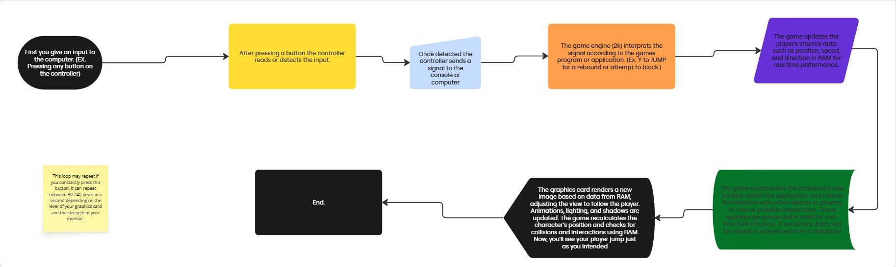

A controller with sensors is like a magic remote that can feel how you move it. When you tilt or shake it, tiny parts inside notices the movement and tell the game. The game then changes what’s happening on screen based on how you move the controller.
When you press a button:
For Example:
Press A -> Player Passes or switch players
Press B -> Player sets screen
Press Y -> Player Jumps
Press X -> Player Shoot/ Steal
How does this work?
A game controller sends signals to the game system when you press buttons or move sticks. These signals tell the system what you want the game to do, like jump, move, or shoot.
To learn more about this click the link below:
https://www.gamesradar.com/ask-gr-anything-how-do-wireless-controllers-work/